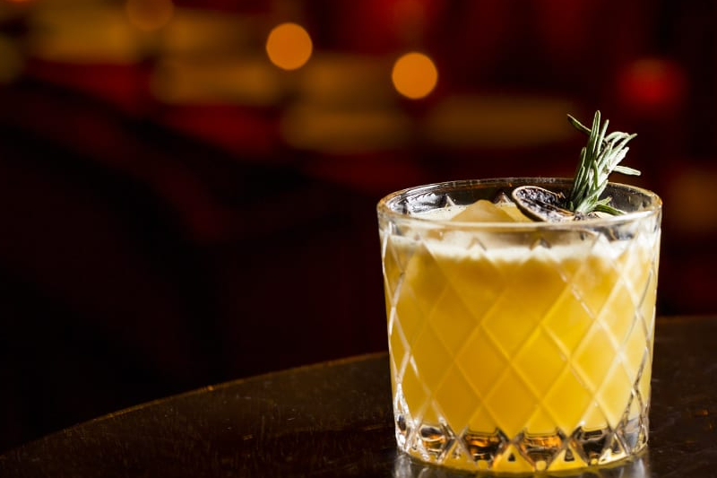

Whisky Sour

Ingredientes:
60 ml de whisky
30 ml de suco de limão fresco
15 ml de xarope simples
Gelo
Clara de ovo (opcional)
Rodela de limão e cereja para decorar
Instruções:
Encha uma coqueteleira com gelo.
Adicione o whisky, o suco de limão e o xarope simples na coqueteleira.
Se você desejar uma textura mais suave e espumosa, adicione uma clara de ovo à coqueteleira neste momento.
Agite vigorosamente a coqueteleira por cerca de 15 a 20 segundos para resfriar e misturar bem os ingredientes.
Coe o coquetel em um copo baixo ou copo old fashioned com gelo fresco.
Decore o coquetel com uma rodela de limão e uma cereja.
Sirva imediatamente e desfrute do seu Whisky Sour!
O Whisky Sour é um coquetel clássico e versátil. Você pode personalizá-lo adicionando algumas gotas de angostura bitters
ou até mesmo experimentando com diferentes tipos de whisky para obter sabores únicos. Aprecie seu Whisky Sour!